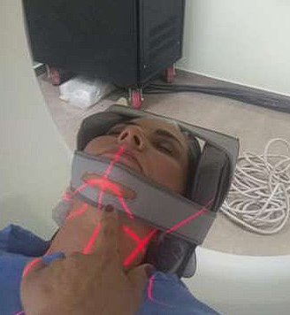
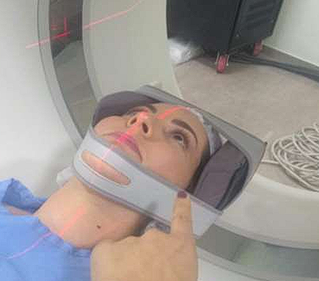

TC de crânio
O que o exame avalia
Estuda todas as estruturas encefálicas, da base — a partir do forame magno — até o topo: ossos do crânio, cerebelo, ambos os hemisférios cerebrais, vasos e ventrículos.
Quando é solicitado
Cefaleia, tonturas, neoplasias, suspeita de AVC, hidrocefalias, traumatismo crânio-encefálico (TCE), entre outras.
Técnicas de aquisição
Aquisição em duplo topograma (lateral e AP), varredura axial da base do crânio (forame magno) até o topo, com filtro de osso aplicado quando necessário para complementar a avaliação.
Planejamento do Scout
No topograma, marca-se o início e o fim da varredura antes de disparar a aquisição — do forame magno (base) até o vértex (topo). Arraste as linhas coloridas sobre a imagem para ajustar o planejamento e veja a extensão e o número estimado de cortes mudarem em tempo real.


A linha ciano simula a posição do corte avançando entre os marcadores que você definiu. A extensão em mm é uma estimativa (calibrada pela altura típica do crânio na imagem) — use para entender a relação entre planejamento e número de cortes, não como medida clínica exata.
Posicionamento do paciente
Região da cabeça
- Decúbito dorsal, com os braços ao longo do corpo.
- Cabeça para dentro do gantry, firmemente posicionada no suporte de crânio.
- Linha órbito-meatal (LOM) perpendicular à mesa de tomografia.
- Centralizar os lasers com o crânio, garantindo o alinhamento correto da imagem.
- Protocolo de exame: orientar sobre remoção de objetos metálicos e necessidade de jejum, quando aplicável.

